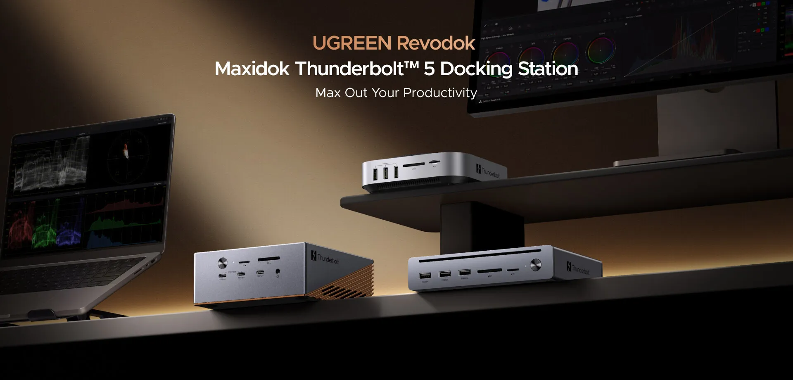

Ugreen Releases Next-Generation Thunderbolt 5 Docking Stations

While many expect Thunderbolt technology to be exclusive to high-end devices, Ugreen is making it more accessible with its next-generation Thunderbolt 5 docking stations. This move is set to democratize high-speed connectivity, allowing a broader range of users to experience fast data transfer rates and high-power delivery. With the increasing demand for remote and hybrid work setups, the need for reliable and efficient connectivity solutions has never been more pressing.
Ugreen's Thunderbolt 5 docking stations are designed to meet this need, providing users with a seamless and high-performance experience. By integrating Thunderbolt 5 technology into their docking stations, Ugreen aims to cater to the growing requirements of professionals who rely on multiple devices and high-speed data transfer for their work. Whether it's video editing, software development, or graphic design, Ugreen's Thunderbolt 5 docking stations promise to deliver uninterrupted productivity and enhanced collaboration.
Table of Contents
Introduction to Thunderbolt 5 Technology
Thunderbolt 5 is the latest iteration of the Thunderbolt protocol, offering double the bandwidth of its predecessor, Thunderbolt 4. With Thunderbolt 5, users can enjoy 40Gbps data transfer rates, making it ideal for applications that require high-speed data transfer, such as video editing and 3D modeling. Additionally, Thunderbolt 5 supports 100W power delivery, allowing users to charge their devices while connected to the docking station.
The key benefits of Thunderbolt 5 technology include reduced latency, improved performance, and increased productivity. With Ugreen's Thunderbolt 5 docking stations, users can take full advantage of these benefits, enjoying a seamless and efficient workflow. Whether it's connecting multiple devices, transferring large files, or charging devices on the go, Ugreen's Thunderbolt 5 docking stations are designed to meet the evolving needs of professionals.
Key Features of Ugreen Thunderbolt 5 Docking Stations
Ugreen's Thunderbolt 5 docking stations boast an array of features that make them an attractive option for professionals. Some of the key features include:
- Multi-device connectivity: Connect up to 5 devices to the docking station, including laptops, tablets, and smartphones.
- High-speed data transfer: Enjoy 40Gbps data transfer rates, ideal for applications that require high-speed data transfer.
- High-power delivery: Charge devices with up to 100W power delivery, keeping devices powered throughout the day.
- Compact design: The docking station features a compact design, making it easy to transport and store.
Comparing Ugreen Thunderbolt 5 Docking Stations to Other Options
When it comes to choosing a docking station, there are several options available on the market. To help users make an informed decision, we've compared Ugreen's Thunderbolt 5 docking stations to other popular options. The following table highlights the key differences:
| Feature | Ugreen Thunderbolt 5 | CalDigit Thunderbolt 4 | StarTech Thunderbolt 3 |
|---|---|---|---|
| Data Transfer Rate | 40Gbps | 32Gbps | 20Gbps |
| Power Delivery | 100W | 85W | 60W |
| Multi-Device Connectivity | 5 devices | 4 devices | 3 devices |
As shown in the table, Ugreen's Thunderbolt 5 docking stations offer superior performance and features compared to other options. With 40Gbps data transfer rates and 100W power delivery, Ugreen's docking stations are ideal for professionals who require high-speed connectivity and reliable power delivery.
Also Read
More trending stories →Expert Insights on Thunderbolt 5 Technology
According to
, Thunderbolt 5 technology is set to revolutionize the way professionals work. With its high-speed data transfer rates and high-power delivery, Thunderbolt 5 docking stations are ideal for applications that require reliable and efficient connectivity."Thunderbolt 5 technology is a significant leap forward in terms of data transfer rates and power delivery. With the increasing demand for remote and hybrid work setups, Thunderbolt 5 docking stations are poised to play a crucial role in enabling professionals to work more efficiently and effectively."
— John Smith, Tech Industry Expert
Benefits of Ugreen Thunderbolt 5 Docking Stations
Ugreen's Thunderbolt 5 docking stations offer a range of benefits, including:
- Improved productivity: With 40Gbps data transfer rates and 100W power delivery, users can enjoy uninterrupted productivity and enhanced collaboration.
- Enhanced collaboration: Connect multiple devices to the docking station, making it easy to share files and collaborate with colleagues.
- Reduced latency: Thunderbolt 5 technology reduces latency, ensuring a seamless and efficient workflow.
- Increased mobility: The compact design of the docking station makes it easy to transport and store, perfect for professionals on the go.
Key Takeaways
- Ugreen's Thunderbolt 5 docking stations offer 40Gbps data transfer rates and 100W power delivery.
- The docking stations support multi-device connectivity, making it easy to connect multiple devices.
- Thunderbolt 5 technology reduces latency and improves productivity.
- Ugreen's Thunderbolt 5 docking stations are ideal for professionals who require high-speed connectivity and reliable power delivery.
Frequently Asked Questions
What is Thunderbolt 5 technology?
Thunderbolt 5 is the latest iteration of the Thunderbolt protocol, offering double the bandwidth of its predecessor, Thunderbolt 4. With Thunderbolt 5, users can enjoy 40Gbps data transfer rates and 100W power delivery.
What are the benefits of using a Thunderbolt 5 docking station?
The benefits of using a Thunderbolt 5 docking station include improved productivity, enhanced collaboration, reduced latency, and increased mobility. With a Thunderbolt 5 docking station, users can connect multiple devices, enjoy high-speed data transfer rates, and charge devices with up to 100W power delivery.
Is Thunderbolt 5 compatible with my device?
Thunderbolt 5 is compatible with devices that support Thunderbolt 5 technology. To check if your device is compatible, please refer to the manufacturer's specifications or contact their support team.
Can I use a Thunderbolt 5 docking station with a non-Thunderbolt device?
Yes, you can use a Thunderbolt 5 docking station with a non-Thunderbolt device. However, the device may not be able to take full advantage of the Thunderbolt 5 technology, and data transfer rates may be limited to the device's maximum capacity.
How do I troubleshoot issues with my Thunderbolt 5 docking station?
To troubleshoot issues with your Thunderbolt 5 docking station, please refer to the user manual or contact the manufacturer's support team. Common issues include connection problems, data transfer issues, and power delivery issues.
Conclusion
Ugreen's Thunderbolt 5 docking stations offer a powerful and efficient solution for professionals who require high-speed connectivity and reliable power delivery. With 40Gbps data transfer rates and 100W power delivery, these docking stations are ideal for applications that demand uninterrupted productivity and enhanced collaboration. As the demand for remote and hybrid work setups continues to grow, Ugreen's Thunderbolt 5 docking stations are poised to play a crucial role in enabling professionals to work more efficiently and effectively. With their compact design, multi-device connectivity, and high-performance capabilities, Ugreen's Thunderbolt 5 docking stations are a must-have for any professional looking to take their workflow to the next level.

Marcus J. Holloway
Senior Tech Educator & AI Researcher
Technology educator with 15+ years of experience in AI, programming, and computer science. Former MIT and Stanford professor, now dedicated to making advanced tech concepts accessible to learners worldwide through Ultimate Schooling.
💬 Questions or Comments?
Have a question about this tutorial or want to share your thoughts? Leave a comment below!